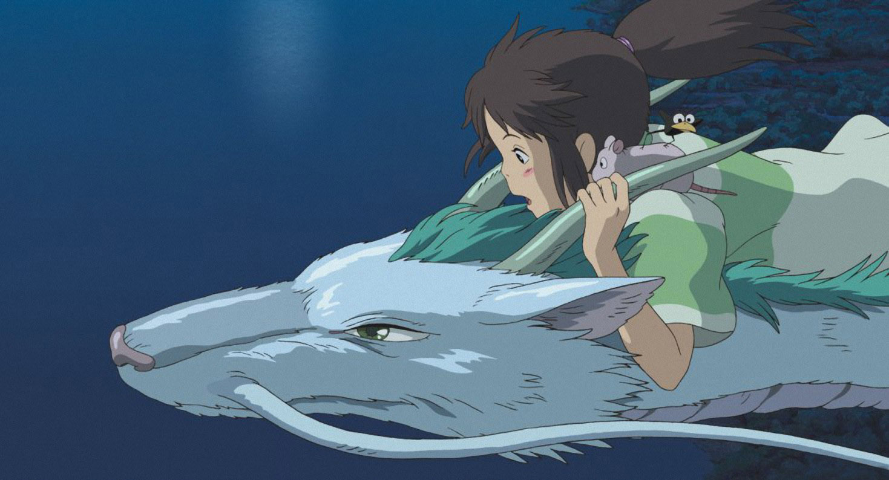
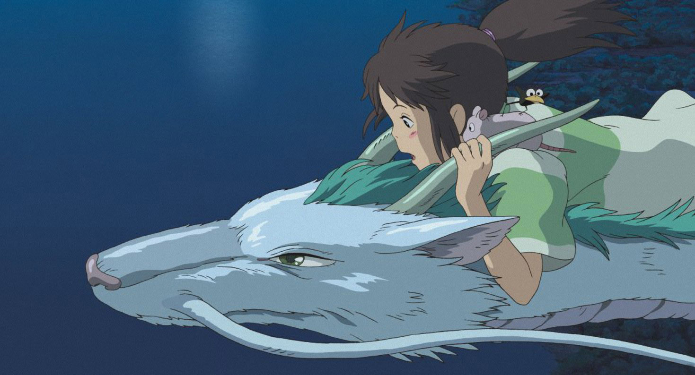
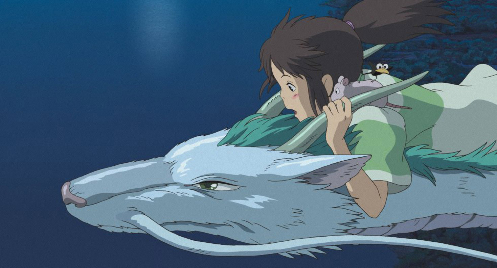

Película de animación japonesa estrenada el 20 de julio de 2001. Fue dirigida por Hayao Miyazaki y producida en el Studio Ghibli, por Tokuma Shoten, Nippon Television Network, Dentsu, Buena Vista Home Entertainment, Tohokushinsha Film, Mitsubishi y distribuida por Tōhō. El elenco principal está compuesto por Rumi Hiiragi, Miyu Irino, Mari Natsuki, Takeshi Naitō, Yasuko Sawaguchi, Tsunehiko Kamijō, Takehiko Ono y Bunta Sugawara. Se trata del séptimo largometraje dirigido por Miyazaki dentro del estudio y de la decimosegunda producción de Ghibli. El filme cuenta la historia de una niña de diez años llamada Chihiro, quien durante una mudanza se ve atrapada en un mundo mágico y sobrenatural, teniendo como misión buscar su libertad y la de sus padres, y así poder regresar a su mundo.
